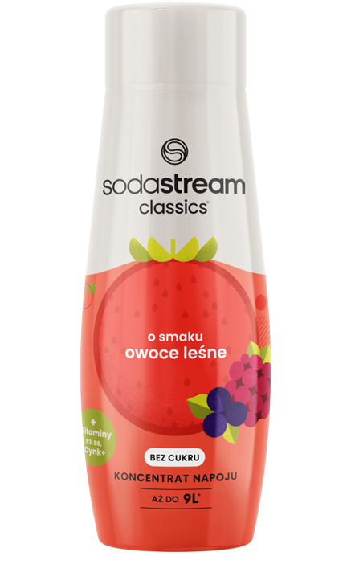
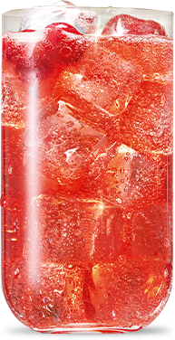

Syrop

SODASTREAM
SYROP owoce leśne,
440 ML
LEŚNA EKSPLOZJA SMAKOWYCH BĄBELKÓW
Szukasz smaku, który zaspokoi pragnienie? Nie masz ochoty na wyprawę
do sklepu? Teraz pyszne napoje gazowane przygotujesz bez
wychodzenia z domu. Sięgnij po nowy smak syropu - SodaStream
Owoce Leśne i poczuj się, jak na wakacjach. Bąbelkuj z nami
i ciesz się leśnym orzeźwieniem na co dzień.
Jedna SODASTREAM - Wiele możliwości

Fantastycznie owocowy
smak w twoim domu
Uwielbiasz wodę gazowaną ale masz ochotę na bardziej intensywny smak? Syrop SodaStream Owoce Leśne to połączenie owocowego orzeźwienia i pysznie bąbelkowej wody, nagazowanej dokładnie tak, jak lubisz. Wystarczy tylko zimna woda, saturator SodaStream i nasz syrop, aby wyczarować genialnie smakową wodę w zaledwie kilka sekund.

gazuj
miksuj
smakuj


Leśna symfonia smaków z witaminami i cynkiem*
Brakuje Ci energii i czujesz, że organizm nie nadąża za tempem dnia? Niacyna, czyli witamina B3 pomaga zmniejszyć uczucie zmęczenia – teraz znajdziesz ją w syropie SodaStream o smaku Owoców Leśnych.
witamina B6Witamina B6 zawarta w syropie SodaStream Owoce Leśne wspomaga prawidłowe działanie układu nerwowego. To pyszny, owocowy smak i witaminowe wsparcie dla Ciebie!
Syrop SodaStream o smaku Owoców Leśnych wzbogaciliśmy cynkiem, który wspiera naturalną odporność i dobre funkcjonowanie organizmu. To codzienne wsparcie zamknięte w małej przyjemności.
Stwórz swój własny koktajl
SodaStream to nie tylko sposób na pyszny napój o smaku dojrzałych Owoców Leśnych! Do gotowego napoju dodaj swoje ulubione dodatki, i stwórz fantastycznie orzeźwiające napoje bez wychodzenia z domu. Wypróbuj swoje ulubione owoce: jagody, truskawki lub maliny, kolorowe kostki lodu i listek mięty, aby poznać nowy wymiar orzeźwienia.
Jedna sodastream - Wiele możliwości
Wybieraj spośród naszej szerokiej gamy syropów SodaStream. Wolisz klasyczne smaki? Sięgnij po syropy 7up, Mirinda lub Pepsi Lime Zero Cukru. Spróbuj także naszych autorskich kompozycji SodaSteam – Marakuja, Kwiat Czarnego Bzu, Różowy Grapefruit lub Pomarańcza z Mango.